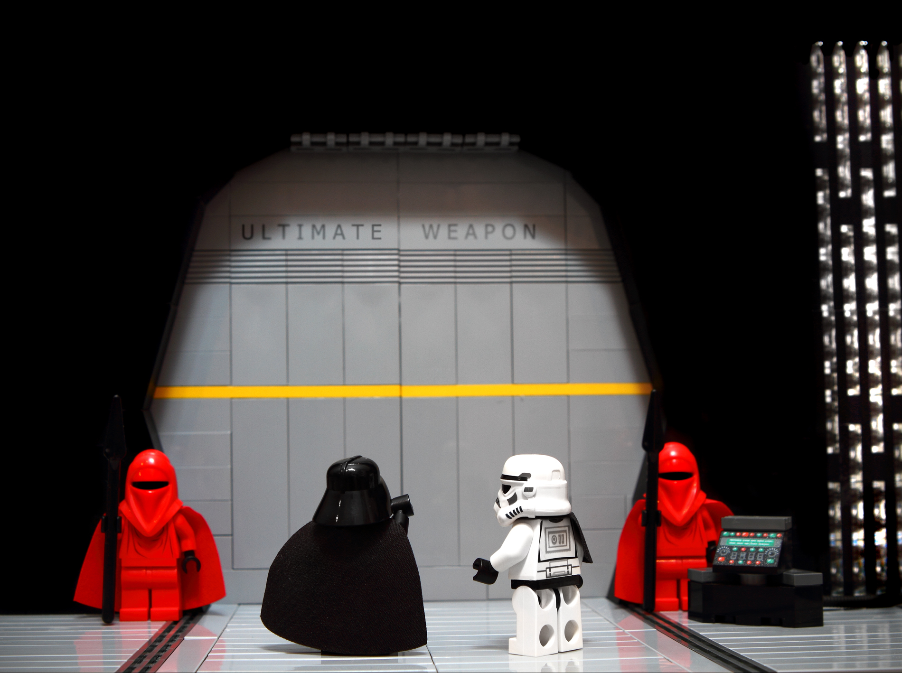

review this catch slide ? display more than one quote ?
DevOps is unique to everyone who practices it
This presentation will NOT :
Be objective
Be exhaustive
Be a copy/paste pack of solutions
text too long, remove hopefully ? review formulation ?
This presentation will :
Give starting points to think on and incentives (hopefully !)
Try to answer "why" DevOps
Help you avoid some traps
Frome Agile...
... to sluggish
Delivery
Feedback
Communication
The Agile infrastructure
BUSINESS
AGILE
DEVELOPMENT
DEVOPS
OPERATIONS
A story about Devs and Ops
DEVELOPER
WALL OF CONFUSION
OPERATIONAL
I want change !
I want stability !
CATCH !
WHAT ?
It is not (only) about devs and ops
A problem occuring between devs and ops might find it's solution elsewhere
DevOps is about ...
bringing people together
automation and Continuous Delivery
giving value to the customer
a lot of things
NOT about a lot of things
What it is not
Just Devs and Ops
Taking jobs away
A separate team
A top bottom approach
(only) Tools or Culture
A job title
The golden Circle
All credit goes to Simon Sinek
The why
collaboration & trust
responsabilities
less frustration
motivation
delivery speed
frequent features
quick fixes
quality & stability
downtime
communication
unexpected
time to market
result & progress
awareness of events
satisfaction
why not ?
Complexity layer
Learning curve
Cost
The how
team in the center
learning culture
communication & transparency
trust & responsability
incentives
team building, lunchs, breakfasts, tech meetings ...
quality is not an option
take time
measure & monitor
adapt & improve
automate
centralize docs & issues
choose tools
use the apis
Process
add a slide to focus on (some) precesses ?
maybe on the 3, like method boy scout, invest a day per week, explain how we improved gpp ?
Wrap up
Everyone is involved
Go iterative
Measure team success
People & Culture > Process > Tools
Tools

A lot of magic keywords
The toolchain
Code review
version control
merge ...
Manage change
Validate
Automate
Manage infrastructure
Infrastructure As Code
Functionnal
Performance
Articfacts storage
Staging
Performance & availability
Functionnal
End user
Add git branch drawing to explain a flow ?
Git
Git flow / feature branching
Merge Request
Code review
Continuous Integration Continuous Deployment
Automate process through whole pipeline
Build and test
Generate feedback
Deploy
Generate feedback
Long run objective
Microservices
For big projects
Evolution
Scalability
Mixed technologies
Complex
New teamates
There is no Silver Bullet
A flow example
QUICK DEMO
=> Intégration de la présentation avec Jenkins ?
Un petit service qui compte les clicks ?
... => a faire tourner en docker vite fait bien fait